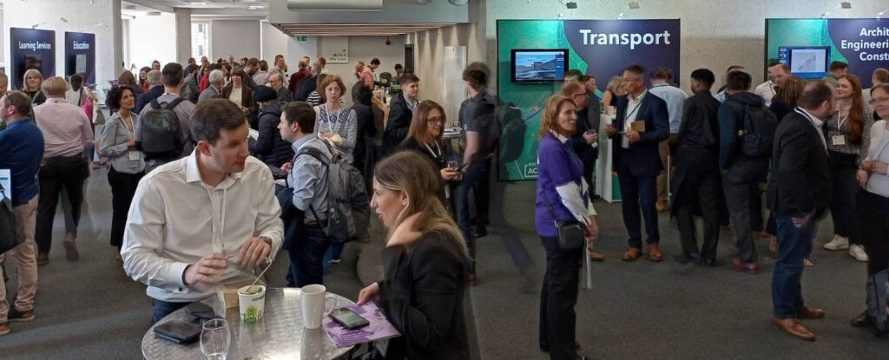
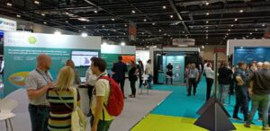

ESRI UK & GeoBusiness: GeoAI & Digital Twins
Along with many other people from the geospatial community, I was up in London earlier this week for ESRI UK Annual Conference, GeoBusiness and Spatial Data Science Conference. It was a great couple of days, and while I didn’t manage to attend everything (limited time, money and energy!) it was great to see and hear what I did.
ESRI UK’s Annual Conference had a couple fewer streams than usual, but it was still as busy. I also managed to get into one of the over subscribed training sessions, to see what had changed in ArcGIS Online recently. Digital twins were mentioned quite a bit, developing from my blog post about last year’s conference, and the vocabulary is evolving and the focus has now shifted to how they are actually useful.
Jurassic Fibre gave a great presentation about how their as-built survey validation process made use of in field tools to collect and verify data. They were comparing what was planned to be built against what was actually built, and had some great processes for managing this. It really shows not just how important data is, but also how important how linking different teams together is important to deliver a service.

Discussions and catching-up at ESRI UK annual conference I also had some really useful discussions about sharing data between platforms – some people use ArcGIS, some use QGIS, some R, and so on. Everyone has good reasons for using the software they do, and it would be a hard struggle to get everyone (in a team, group or even organisation) to use the same software – and more often that not will be a waste of time. What can be done is to help everyone make use of the same data, and / or share data in exchangeable formats.
Accessibility also had a focus in the end keynote presentation, combined with ChatGPT. Large language models create great potential for interacting with maps and spatial data in a different way – a prototype demo showed how a user could verbally ask for information about a map, and the computer could give a verbal summary. No where near production yet, but it shows what could happen. There is a huge amount of potential here – with developing better interfaces for those suffering from visual impairment – or for better natural language interaction with maps. This linked a bit in with my PhD work, from 2008-2011, focusing on sonification, where I used sound to represent data in combination with vision. There are some videos and code demonstrating this (I’m sure the VBA code in ArcMap will no longer work, not the Google Maps API code, but the videos how how it worked!), as well as my PhD thesis itself.
https://vimeo.com/22290435
Sonification – from a few years ago 😉
Will ChatGPT replace GIS Analysts? I don’t think so, so we will all still have jobs! It will certainly change what we can do, and some jobs will change. With any LLM, you need to know how to ask the right question as well as being able to understand the answer that comes back. Ultimately the skills will be in interpreting the results, and making a judgement call about whether it is useful or not. Google revolutionised the internet when it was launched – and LLMs will be no different. As ever, we always need to be critical of maps and spatial analysis output – and ChatGPT or Bard or any other LLM will not change that. If anything, it will make it more important!
- “So don’t just use GIS, but use it critically.”
I also popped into the Spatial Data Science Conference party in Wednesday night, and it sounds like the conference was fantastic – next time perhaps!
GeoBusiness followed ESRI AC UK, with a huge range of geo related businesses hosting stands and presenting talks. The stands were very equipment focused, with many new drones and surveying tool available to have a look at and discuss. However I was more interested in the talks and networking opportunities. The skills shortage was again raised as an issue, with not enough people available with geospatial skills. However speaking with those at the coal faces, new graduate with geospatial skills are being tempted away with starting salaries of £5k – £10k more for similar roles outside geospatial (e.g. programming) and even more for data science roles. It’s a hard ask for someone to give up £5k – £10k a year to stay in geospatial!

Developing skills of people coming into geospatial is something that is of particular interest to me, with a range of initiatives around training and skills development. While many users are big ESRI clients, there is certainly an increase in people wanting to use ESRI along side open source solutions – particularly QGIS. I see lots of potential for North Road’s SLYR tool, what they term: the ESRI to QGIS Compatibility Suite.
There are so many novel applications of GI data and one in particular caught my eye – ClearSky, a product from Aspia Space, have created a AI algorithm which converts uses cloud-penetrating Synthetic Aperture Radar (SAR) data to create cloudless multispectral imaging, right across the visible and short-wave infrared spectrum. This allows a ‘cloud-free’ view of satellite imagery – an interesting and valuable resource.
A different, but potentially equally useful application of GIS data was presented by Christopher Jackson from Advanced Infrastructure talking about geospatial tools for energy. They have created an application to help local councils estimate where it may be viable to install electric car charging points. The GIS analysis itself is not that ground breaking, as they are looking at a combination of IMD data, street width and electricity supply provision data to estimate feasibility and cost of electric car charging point installation – but the fact they think this is worth building into a product that can be sold is. It shows how vital geospatial data is and reminds me of the fact that there are still many people out there who don’t know what geospatial is. Communicating this is one thing we could all do better at.
It was great to see so many people, and chat about upcoming projects and opportunities, including FOSS4G:UK 2023 – watch this space(s) for more details soon: OSGeo:UK!